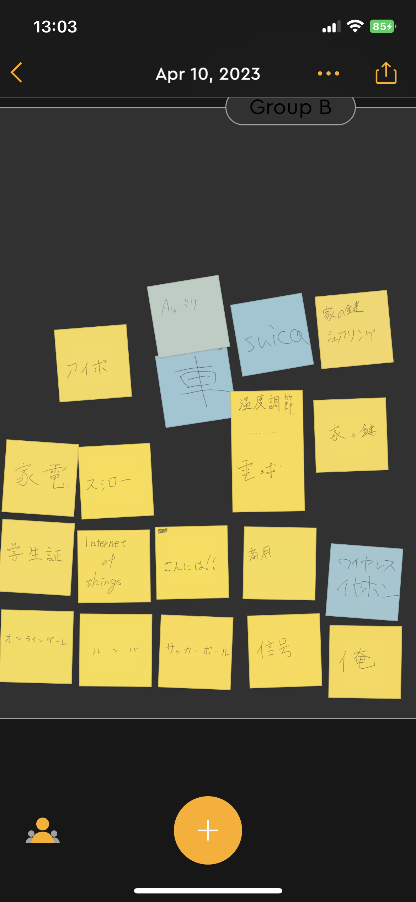
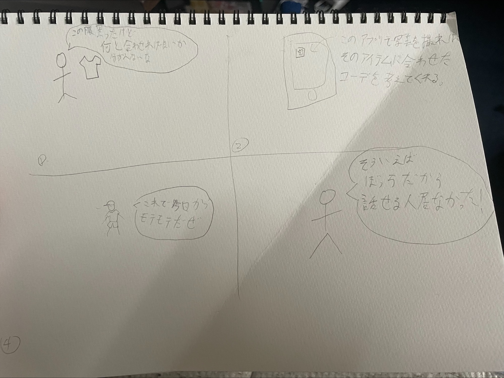
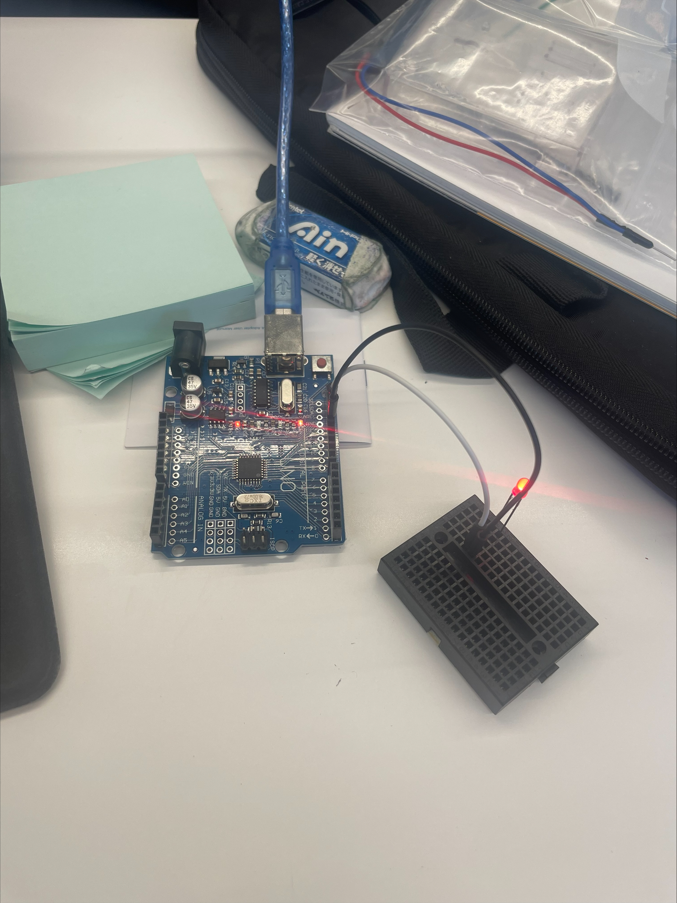

IoTとは
IoT とは、従来インターネットに接続されていなかった様々なモノ（センサー機器、駆動装置（アクチュエーター）、住宅・建物、車、家電製品、電子機器など）が、
ネットワークを通じてサーバーやクラウドサービスに接続され、相互に情報交換をする仕組みです。
読み方は「アイオーティー」で、「Internet of Things」の略からもわかるように「モノのインターネット」という意味で使われています。
モノがインターネットと接続されることによって、これまで埋もれていたデータをサーバー上で、処理、変換、分析、連携することが可能になります。
このような IoT の技術を活用することによって、これまでに無かった、より高い価値やサービス生み出すことが可能になります。また、センサーやデバイスといった機器、
通信インフラ、クラウドサービスの高性能化、低価格化が追い風になり、IoT の導入がより身近なものになってきています。
グループワークのポストイット（身近なIoT）

・QOLを上げてくれるアイテム（Airタグ、ワイヤレスイヤホンなど）
・出欠確認や交通系ICなどのチップが埋め込まれたカード
など
IoTで実現できそうなサービス

服を買ってみたがいいものの、スタイリングに困ったときに、いくつかのコーディネートを提案
してくれるアプリ。
マイコンボード体験
